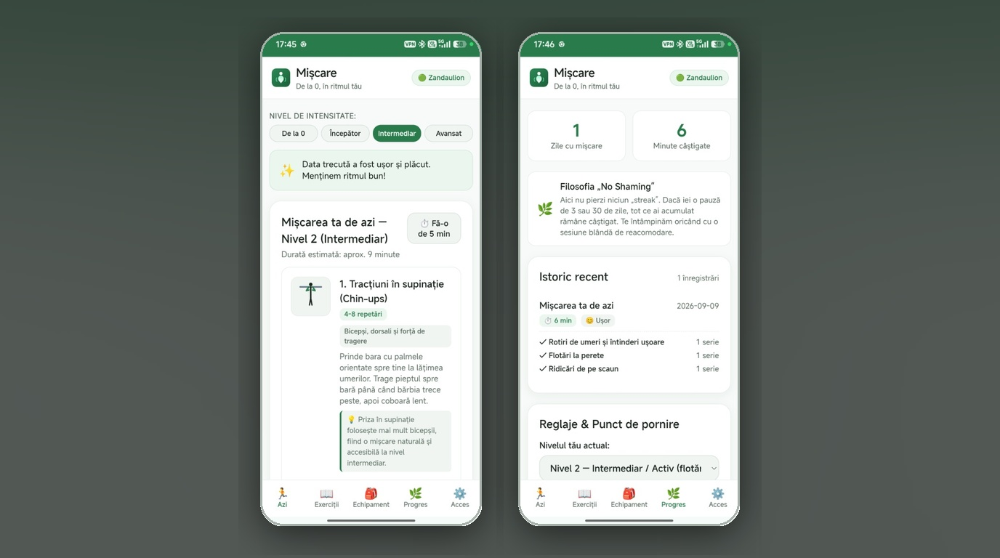

Alltagshelfer
Pocket Omaha
Verstehen Sie, was sich bei Ihren Unternehmen geändert hat. Überprüfen Sie Ihre Gründe.
Finde etwas Bewegung für heute – mit der Ausrüstung, die du schon hast.

Mișcare ist auf Google Play für Android 7.0 oder neuer verfügbar und seit Version 0.1.1 (3. November 2026) produktiv. Sie enthält geführte Routinen, 45 illustrierte Übungen, 12 Oberflächensprachen, ein helles oder dunkles Farbschema und ein lokales Trainingsjournal mit JSON-Sicherung. Konto, Server oder Internetberechtigung sind nicht nötig.
Version 0.1.1 zeigt jeden Bildschirm in der gewählten Sprache, zählt gehaltene Übungen in Sekunden statt in Wiederholungen und hält „Bei null“ auf deinem Niveau, auch nur mit dem eigenen Körpergewicht. Außerdem gibt es ein dunkles Farbschema, und die geschätzte Dauer folgt jetzt der gewählten Zahl an Sätzen.
Wer lieber von Hand installiert, findet die signierte APK unter GitHub Releases. Sie trägt eine andere Signatur als die Play-Version, daher kann keine die andere aktualisieren: Exportiere deine Daten vor einem Wechsel. Die Android-App übernimmt keinen PWA-Verlauf, und ein JSON-Import ersetzt das aktuelle Profil und Journal. In der Installations- und Backup-Anleitung findest du Prüfsummen, Signierung und offene Prüfungen. Erinnerungen sind nicht umgesetzt.
Beginnen Sie bei Null. Bewegen Sie sich in Ihrem eigenen Tempo. Keine Schuld, nur Anpassung.
Mișcare ist eine adaptive Trainings-App mit einer Android-App auf Google Play und einer selbst gehosteten Web-Ausgabe. Sie richtet sich an Einsteiger und alle, die nach einer Pause zurückkehren, mit kurzen Routinen, Ausrüstungswahl und einem Journal. Fortschritt ist eine Wahl, und Ruhetage kosten keine Serie.
Beim Öffnen der App werden Benutzer direkt mit „Heutige Sitzung“ begrüßt und können mit einem einzigen Tastendruck gestartet werden. Wenn es im Leben hektisch zugeht, können Sie das Training mit der Ein-Klick-Option „Machen Sie es auf 5 Minuten“ verkürzen. Wenn das Leben tagelang dazwischenkommt, gibt es keine Brüche oder Schuldgefühle; Die App begrüßt Sie einfach mit einer sanften Wiedereintrittsroutine.
Die selbst gehostete PWA nutzt Vanilla JavaScript, Node.js und SQLite, mit pwa-kit-Updates und Geräteeinladungen über pwa-invite-console. Die Android-App bündelt Oberfläche und adaptive Engine in Capacitor, speichert Profil und Journal lokal in IndexedDB und wird über Google Play oder durch Installation einer neueren signierten APK aktualisiert.


pwa-kit für Network-First-Service-Worker-Caching mit Content-Hash-Versionsstempelung und unterbrechungsfreien Aktualisierungsaufforderungen.pwa-invite-console Paarungscodes (XXXX-YYYY-ZZZZ) und stellt sichere, langlebige Gerätesitzungstoken aus.Vanilla-JavaScript (ES-Module) ohne Build-Schritt-Overhead, responsive benutzerdefinierte CSS-Eigenschaften, benutzerdefinierte Web-Audio-Synthese und Service Worker-Offline-Caching.
Die PWA verwendet Node.js 24, das integrierte Modul node:sqliteund Express-REST-Endpunkte. Die Android-Ausgabe führt die gemeinsame Trainingslogik lokal aus und benötigt kein Backend.
Native Vertragskompatibilität mit pwa-kit für die Versionslebenszyklusverwaltung und pwa-invite-console für die Einlösung von Einladungstoken und die Geräteverwaltung.
Verstehen Sie, was sich bei Ihren Unternehmen geändert hat. Überprüfen Sie Ihre Gründe.

Steuere durch Gravitationstrichter in einem Retro-Arcadespiel mit Physik.

Plane große Familienausgaben, von der ersten Schätzung bis zur letzten Rate.
MișcareDatenschutzerklärung (auf Englisch)Nutzungsbedingungen (auf Englisch)